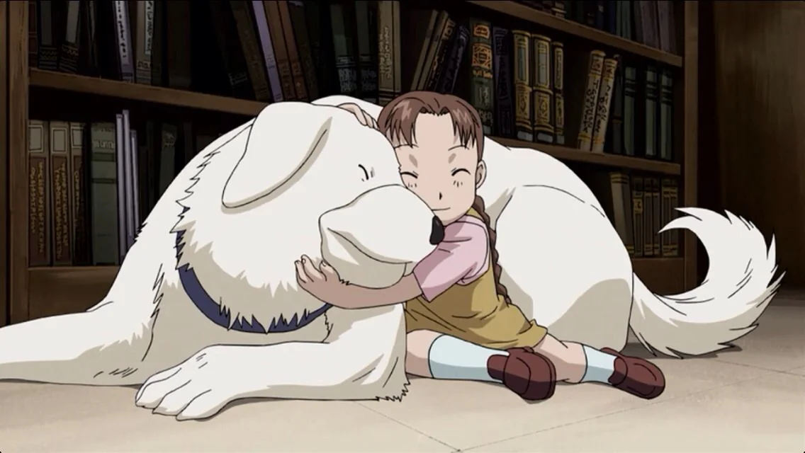
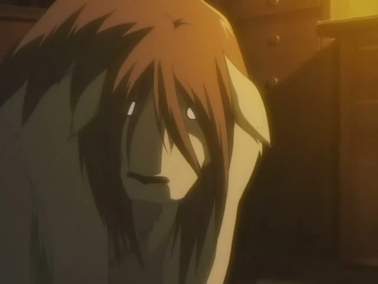

Fullmetal Alchemist: Brotherhood Afterthoughts
(Spoilers Alert)
No show or movie has scarred me like episode 4, "An Alchemist's Anguish." Shou Tucker, a state alchemist, in order to keep his title, combined his own daughter Nina with their dog Alexander to create a chimera.
The show explores the dangers of scientism — the idea that complete faith in any system of knowledge (including science) can lead to devastating consequences.
Or at least, that’s what conventional analysis suggests. But as a thought experiment: would Ed and Al have even continued their journey without placing complete trust in alchemy? Although they gradually came to understand the true nature of alchemy over the course of their travels, it was their initial obsession and unwavering faith in it that set everything into motion. The story of the Elric brothers stands as a powerful reminder that some lessons cannot simply be taught — they must be lived.
The show beautifully captures how someone, driven by desperation to trust a system of knowledge like alchemy in order to save a loved one, must eventually confront the horrors of blind faith.
The way the Elric brothers confront their past mistakes — refusing to let their trust in alchemy override their innate sense of morality — is truly remarkable. They embody the ideal of pursuing one’s passions without becoming consumed by any single ideology (and the show is full of red herrings that you’ll notice if you watch it). Anyway, since this is my first blog, I just want to say: if you’re reading this, you should definitely give the show a chance — even though I may have spoiled a bit!

